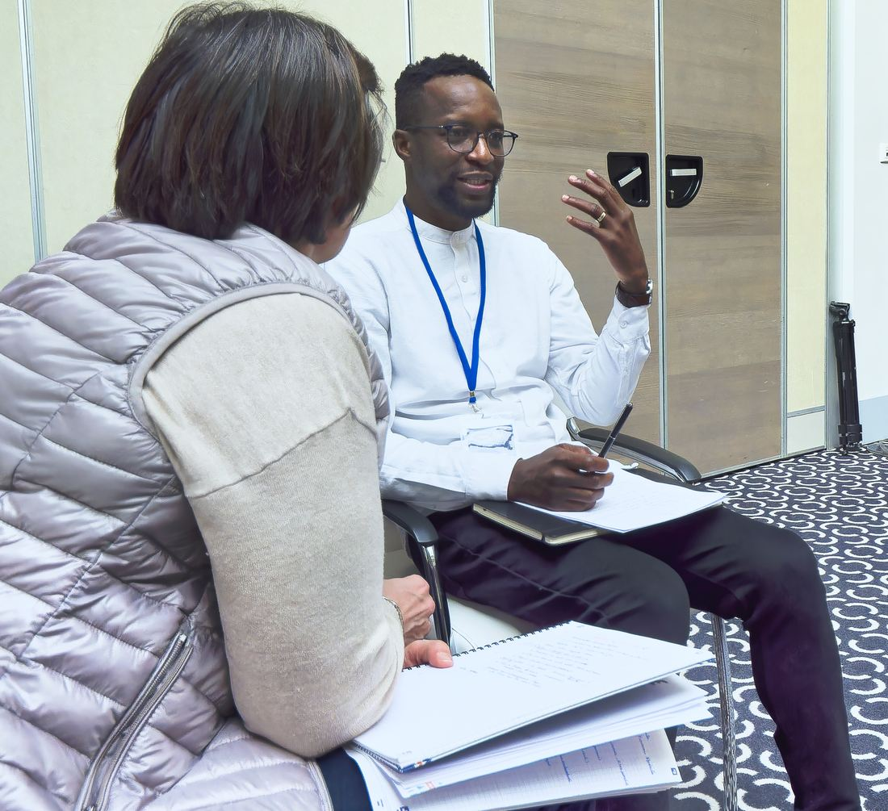
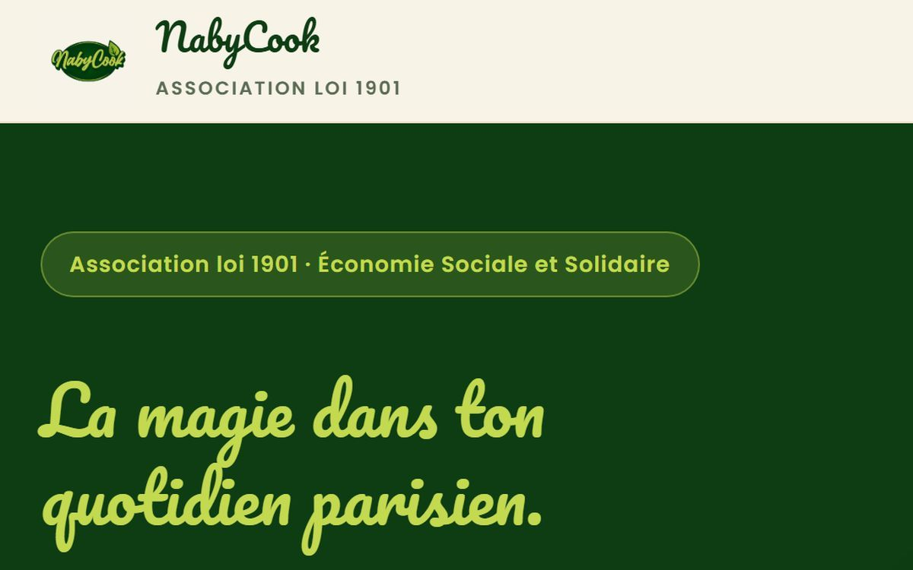
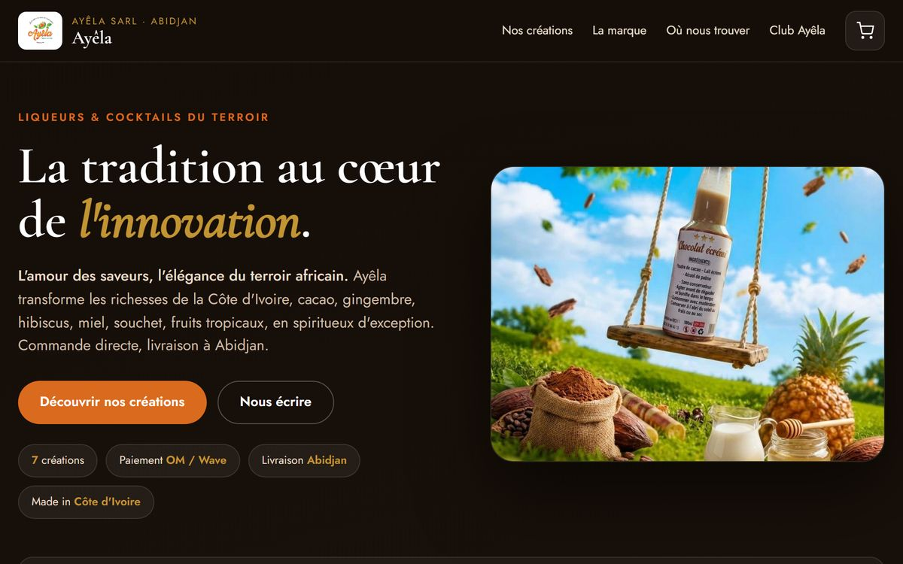
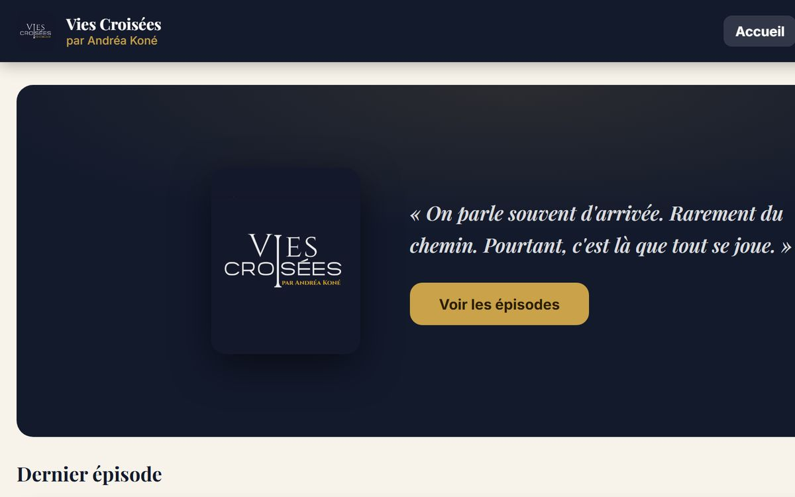

01
Tu as une activité, et personne ne sait que tu existes
Le travail est bon, les clients qui te connaissent reviennent, mais rien ne te ramène personne. Tu sais qu'il faudrait te montrer, et quelque chose t'en empêche.
Personal branding · Dirigeants
Accompagnement en personal branding pour dirigeants et entrepreneurs. On part de qui tu es, pas d'une stratégie de contenu.
Trente minutes, sans engagement. Tu repars avec les mots pour décrire ce que tu vis, même si on ne travaille pas ensemble.
Ce que tu vis
Quand il faut te montrer
Tu veux faire connaître ta marque, et tu n'as pas envie de te mettre en avant.
Tu sais qu'il faudrait publier, parler, te montrer. Et chaque fois, quelque chose t'arrête.
Quand tu regardes ton projet
Tu as trop d'idées, et aucune n'a de date.
Le projet tient debout dans ta tête. Sur le papier, il n'a ni étapes, ni échéance, ni fin.
Quand l'échéance approche
Plus la date se rapproche, moins tu y arrives.
Tu sais exactement ce que tu as à faire. C'est au moment de le faire que ça se bloque.
Le soir
Tu ne dors pas, et tu cherches des réponses sur internet.
À cette heure-là, tu n'appelleras personne.
À la maison
Personne autour de toi ne croit vraiment à ce que tu construis.
Tu as arrêté d'en parler, c'est plus simple que d'expliquer à chaque fois.
Au fond
Tu ne te crois pas capable, parce que c'est ce qu'on t'a toujours dit.
Et tu n'en as parlé à personne.
Si tu t'es reconnu dans une seule de ces lignes, ce qui te manque n'est pas l'argent. C'est une structure.
L'argent est un outil. Il ne décide pas de ce que ton investissement va produire.
Qui j'accompagne
01
Le travail est bon, les clients qui te connaissent reviennent, mais rien ne te ramène personne. Tu sais qu'il faudrait te montrer, et quelque chose t'en empêche.
02
Il tourne dans ta tête depuis des mois, tu sais qu'il tient debout, mais il n'a ni cadre, ni étapes, ni date.
03
Un examen, une certification, un lancement. Tu sais ce que tu as à faire, et plus l'échéance approche, moins tu y arrives.
Qui je suis
J'ai construit pendant trois ans un projet que j'avais contribué à faire connaître jusqu'au Salon du Chocolat de Paris. En 2018, j'en suis sorti évincé, à zéro et endetté. Il m'a fallu des années pour comprendre que ce que j'avais traversé pouvait servir à quelqu'un d'autre.
Pour être juste dans ce métier, je devais sans doute passer par là. On n'aide pas vraiment quelqu'un quand on projette ses propres peurs sur lui.
Comment je travaille
Trois connexions à rétablir, dans cet ordre. C'est ce rééquilibrage qui permet d'être solide, conséquent et inarrêtable.

Une séance, telle qu'elle se passe. Une heure, un carnet, et ce qui bloque qu'on finit par nommer.
AXE 1
Tu identifies ton identité réelle, tes forces et ce qui te freine. Tu arrêtes de te présenter comme tu crois qu'on t'attend.
AXE 2
Tu trouves le style de leadership qui te permet d'exister sans forcer, d'assumer ta vision et de la dire à ton entourage.
AXE 3
Tu repars avec un plan d'action aligné, une projection à long terme et une feuille de route adaptée à là où tu en es réellement.
Je sais qui je suis. Je sais comment exister sans forcer. Je sais où je vais et comment y aller.
Ce qui existe
Ce sont deux offres séparées, facturées séparément, et tu peux t'arrêter après la première. Mais quand un plan doit devenir réel, c'est la même personne qui le tient.

Nabycook
Marque, association et site

La Maison Ayêla
Vitrine et tableau de bord

Vies Croisées
Média en ligne
En 2014, je suis entré chez Advantage Conseils comme community manager, coopté sur leur événement maison, le Festival des Grillades.
En 2026, j'accompagne la même structure, avec la même dirigeante, sur l'édition parisienne du même festival.
C'est vérifiable, et c'est le seul argument de crédibilité qui compte vraiment.
Et latiss.net, la plateforme de fans d'un artiste, en production sur son propre domaine.
7
L'accompagnement est intense et je m'implique à fond sur chaque dossier. Quand les places sont prises, elles sont prises.
Je ne relance personne. Un accompagnement ne marche que si la démarche vient de toi, et les résultats le prouvent à chaque fois.
Tu me dis ce qui t'amène, où tu en es et ce que tu veux atteindre. Je réponds sous 48 heures.